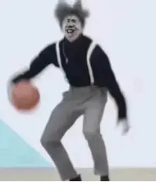
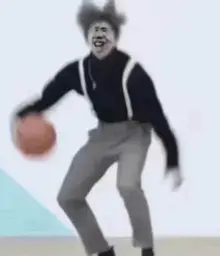

序章：小黑子的“玩梗日常”
作为天天刷“鸡你太美”、存满小黑子表情包的资深玩梗人，我每天必做三件事：练篮球舞、唱只因rap、和网友斗梗。直到那天，我对着手机里的“鸡形表情包”吐槽“要是真有会唱跳的鸡就好了”，下一秒就被一道金光吸进了屏幕――穿越到了全是“只因元素”的世界！
作为天天刷“鸡你太美”、存满小黑子表情包的资深玩梗人，我每天必做三件事：练篮球舞、唱只因rap、和网友斗梗。直到那天，我对着手机里的“鸡形表情包”吐槽“要是真有会唱跳的鸡就好了”，下一秒就被一道金光吸进了屏幕――穿越到了全是“只因元素”的世界！
